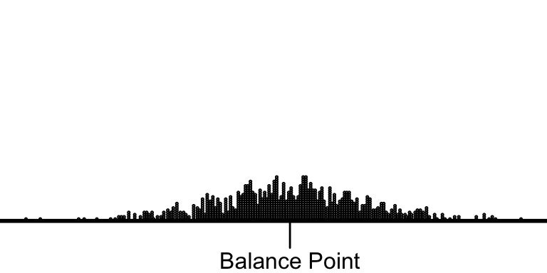
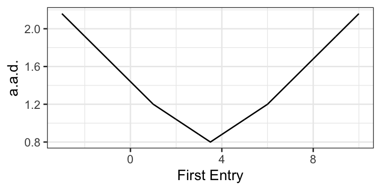

Chapter 8 The Average
The most common measure of the location of a variable is the average. Suppose we have a variable (a list of numbers) \(X = \{x_1, x_2, ..., x_n\)}.
\[\begin{equation} \text{average} = \dfrac{\text{the sum of the list}}{\text{the number of entries in the list}} = \dfrac{\sum_{i = 1}^n x_i}{n} \nonumber \end{equation}\]
The average is easy to compute and easy to work with mathematically.
Unfortunately, the average doesn’t have an easy interpretation. The best interpretation, in my mind, is as the balance-point for the data. If we imagine the left-right axis as a teeter-totter and stack the data along the beam according to their values, then the average is the position of the fulcrum that would balance the data-filled beam.

8.1 The Standard Deviation
The most common measure of scale is the standard deviation (SD). The intuition is subtle, so let’s look a a simple example. Rember, our goal is a "give-or-take number.
Suppose we have a list of numbers \(X = \{1, 2, 3, 4, 5\}\). The average of this list is 3, so we can compute the deviation from average for each value.
\[\begin{equation} \text{deviation from average} = d = \text{value} - \text{average} \nonumber \end{equation}\]
In this case, \(d = \{-2, -1, 0, 1, 2\}\).
We want to use these deviations to find a give-or-take number.
Here’s an initial idea. Just take the absolute values \(|d| = \{2, 1, 0, 1, 2\}\). These tell us how far each entry falls away from the average. Then we could average the absolute devations to find how far a typical entries falls away from the average of the list. In this case, we get 1.2. This is reasonable approach and we’ll refer to it as the average absolute devation or a.a.d. (It turns out that the a.a.d. isn’t a common quantity, so I don’t elevate it with an all-caps acronym.)
The a.a.d. has one big problem–it uses an absolute value. This introduces some computational and mathematical difficulties.

So let’s do something similar. Rather than take the absolute value, let’s square the deviations, take the average, and then undo the square at the end, so that \(\text{SD} = \sqrt{\text{avg}(d^2)}\).
Sometimes taking the (3) square root of (2) the average of (1) the squares is called the RMS. In this case, the RMS of the deviations from the average is the SD, so that
\[\begin{equation} \text{SD} = \sqrt{\text{avg}(d^2)} = \sqrt{\dfrac{(x_i - \text{avg}(X))^2}{n}} = \text{RMS of deviations from average}. \nonumber \end{equation}\]
The SD moves smoothly as you move around the entries in the list.
To calculate the SD, first make this little table, with the list of values, the deviations from the average, and the squares of the deviations.
| \(X\) | \(d\) | \(d^2\) |
|---|---|---|
| 1 | -2 | 4 |
| 2 | -1 | 1 |
| 3 | 0 | 0 |
| 4 | 1 | 1 |
| 5 | 2 | 4 |
Then compute the average of the squares of the deviations, which in this case is 2. Then take the square root of that average, which in this case is about 1.4. Notice that 1.4 is about 1.2 (the a.a.d.). The SD is bounded (weakly) below by the a.a.s., but they’ll usually be close, so we can think of the SD as how far a typical point falls away from the average.